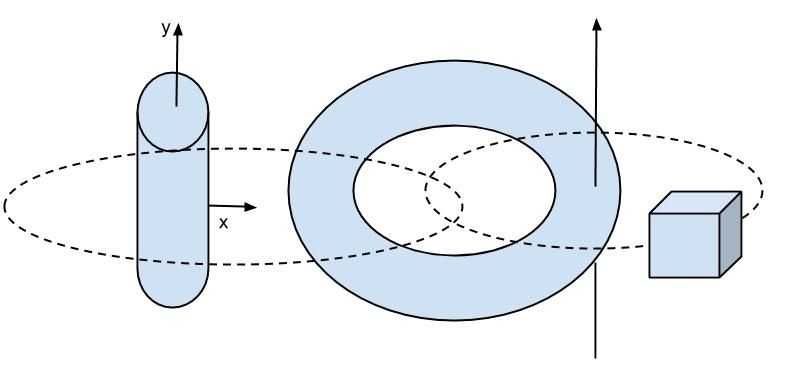

|
Master 2 Informatique
GL & MiTiC
option MAR : TP1 |
|
| auteur : Rémi Cozot & Fabrice Lamarche |
date : Novembre 2014 |
durée : 2 heures |
| date limite : sans objet |
|
(Envoyer compte rendu) |
Sujet : Géométries, Matériaux et Graphe de scène
Question 1 : Installation et étude du fourni
Téléchargez
ThreeJS (
ici).
Téléchargez l'environnement des TPs (
ici).
Faites en sorte que l'exemple fourni fonctionne avec
Firefox
(Remarque : Chrome ou Internet Explorer ne permettent pas de faire fonctionner
l'exemple en local).
Question 2 : Géométries
Remplacez l'objet de l'exemple fourni par les géométries disponibles par
ThreeJS :
BoxGeometry, CylinderGeometry, TorusGeometry.
Question 3 : Matériaux
Sur trois tores (disposés horizontaelment sur l'axe x), essayez les différentes types
de matériaux :
MeshBasicMaterial, MeshLambertMaterial, MeshPongMaterial.
Question 4 : Graphe de scène
Construisez une scène composée de : 1 cylindre, 1 tore, et 1 cube.
Le cylindre (vertical) tourne autour de son axe horizontal (x).
Le tore tourne autour du cylindre selon l'axe y mais fait toujours face à la caméra.
Le cube décrit un cercle qui passe par l'intérieur du tore (Cf. schéma).

Figure : schéma
Travail à rendre
Un fichier
zip
(contenant la page html, et éventuellement les ressources supplémentaires permettant sonexécution)
correspondant à la
Question 4.